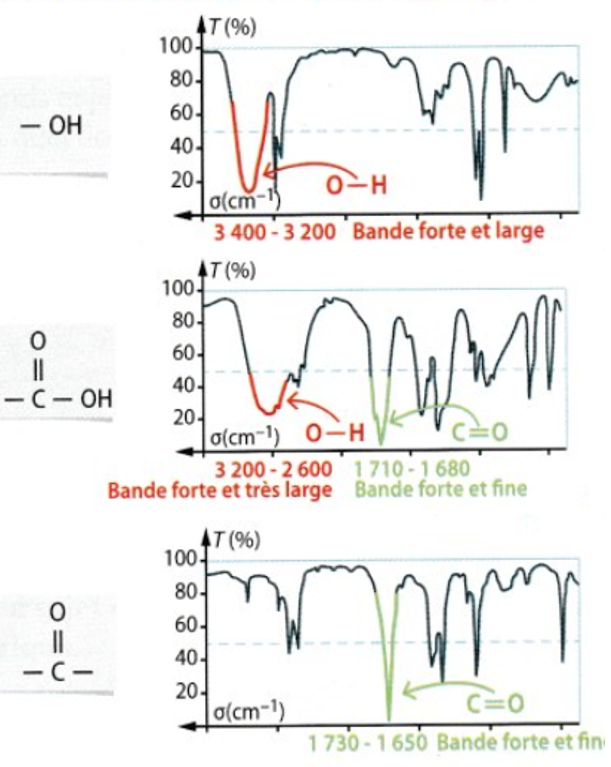
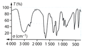
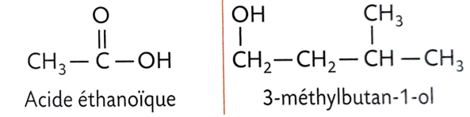
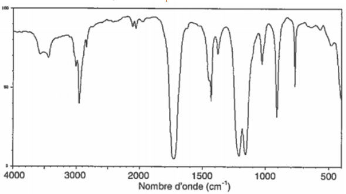
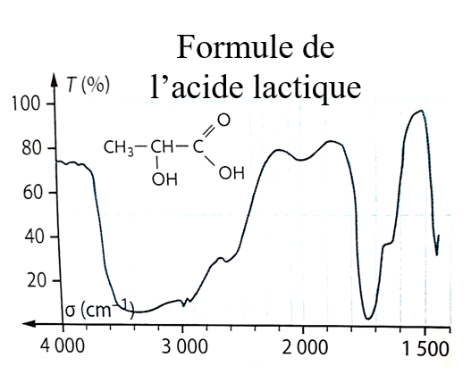

Lycée Taiarapu Nui
Terminale Générale
Terminale Générale
Spécialité Physique – Chimie
2020-2021
2020-2021
C3. Analyse physique d'un système chimique
Activité 1
Document 1 −
Loi de Beer-Lambert

La loi de Lambert indique que l'absorbance A est directement proportionnelle
à l'épaisseur ℓ du milieu traversé. En 1852, Beer complète la loi de Lambert
par la relation de proportionnalité entre l'absorbance et les concentrations
C des constituants responsables de l'atténuation.
$A=k.C$
Il faut utiliser des rayons dont la longueur d’onde correspond à l’absorbance
maximale : $λ_{max}$ . Cette valeur s’obtient en étudiant le spectre d’absorption
sur lequel est tracé $A=f(λ)$.
Document 2 − Acide carminique
 L’acide carminique est un colorant de couleur rouge présent naturellement chez
la cochenille. Cet insecte produit l'acide pour se protéger des prédateurs.
15000 insectes sont nécessaires pour obtenir 100 g d'un produit renfermant
15% en masse d'acide carminique.
L’acide carminique est un colorant de couleur rouge présent naturellement chez
la cochenille. Cet insecte produit l'acide pour se protéger des prédateurs.
15000 insectes sont nécessaires pour obtenir 100 g d'un produit renfermant
15% en masse d'acide carminique.La formule chimique de l’acide carminique est $C_{22} H_{20} O_{13}$. Sa masse molaire est $M = 492 \ g.mol.L^{-1}$. Il a été synthétisé pour la première fois en 1991.
Le code E120, désignant le colorant alimentaire rouge, regroupe les extraits de cochenille, l'acide carminique, le pigment carmin. La dose journalière admissible (DJA) est de $2,5 \ mg$ par jour par kilogramme de masse corporelle.
Document 3 − Chewing-Gum à la fraise
Certains chewing-gums contiennent le colorant E120. On introduit un
chewing-gum dans de l’eau jusqu’à dissolution complète du colorant
E120. On ajuste le volume de la solution à un volume $V=50\ mL$. La
solution obtenue est appelée solution $S$. La mesure de l’absorbance
de la solution $S$ est $A_S=0,21$. On mesure l’absorbance de solution de colorant E120 de différentes concentrations.
| $C(mol.L^{-1})$ | $6,7.10^{-6}$ | $1,3.10^{-5}$ | $2,0.10^{-5}$ | $2,6.10^{-5}$ | $3,4.10^{-5}$ | $6,7.10^{-5}$ |
| $A$ | $0,058$ | $0,118$ | $0,172$ | $0,253$ | $0,299$ | $0,582$ |
1) Déterminer la concentration $C_S$.
2) Calculer le nombre de chewing-gums qu’un élève
de 60 kg devrait consommer pour atteindre la DJA du E120.
3) (Bonus) Combien d’insectes faut-il pour produire le colorant
nécessaire à la boite de 17 chewing-gums ?
Exercice 1
Sur l’étiquette d’une boite de sucre vanillé, il est indiqué :
« 4% en masse de gousse de vanille ».
Une gamme d’étalonnage de solutions de concentrations connues en
vanilline a été réalisée. On mesure les absorbances de ces solutions :
| Solution | $S_1$ | $S_2$ | $S_3$ | $S_4$ | $S_5$ |
| $C(\mu mol.L^{-1})$ | $6,6$ | $13$ | $20$ | $26$ | $33$ |
| Absorbance | $0,175$ | $0,342$ | $0,510$ | $0,670$ | $0,851$ |
L’absorbance de cette solution est égale à 0,241.
Donnée : $M(vanilline)=152,0 g.mol^{-1}$.
4) Montrer à l’aide des résultats expérimentaux, que la masse de vanilline présente
dans $1,0 g$ de sucre vanillé est d’environ $0,7\ mg$.
5) Sachant qu’un gramme de gousse de vanille peut contenir entre $5$ à $25\ mg$ de vanilline,
vérifier si la mention sur l’étiquette est acceptable.
Petite pause...un peu d'histoire !
Document 4 −
Électrolytes
Michael Faraday (1791-1867), physicien et chimiste britannique, avait
la conviction que les ions étaient produits par le processus
d’électrolyse (le passage du courant électrique dans une solution).
En 1884 Svante August Arrhenius (1859-1927), chimiste suédois,
porte ses travaux de recherche sur la conductivité des solutions
d’électrolytes ce qui lui permet écrire sa théorie sur la
dissociation. Elle postule que les composés chimiques en solution
dans une solution électrolytique (conductrice de charges électriques)
sont dissociés en ions, et ce même en l’absence de courant électrique
traversant la solution. Le plus important est l’idée que ni les
sels purs ni l'eau pure ne sont conducteurs, mais qu’une solution
de sels l’est.
Document 5 −
Conductivité des électrolytes en solution
Friedrich Wilhelm Georg Kohlrausch (1840 –1910), physicien allemand, démontra
en 1874 qu’un électrolyte possède une résistance qui lui est propre. Il montra
pour une solution diluée que la conductivité électrique d’un électrolytique est
proportionnelle à sa concentration. Ces travaux sont connus sous le nom de loi
de Kohlrausch.
Exercice 2
La conductivité de solutions de chlorure de calcium de différentes
concentration C sont données dans le tableau suivant :
| C$(mmol.L^{-1})$ | $1,0$ | $2,5$ | $5,0$ | $7,5$ | $10,0$ |
| $\sigma (mS.cm^{-1})$ | $0,27$ | $0,68$ | $1,33$ | $2,04$ | $2,70$ |
6) Tracer la courbe d’étalonnage $σ=f(C)$.
7) La courbe traduit-elle la loi de Kohlrausch ? Justifier.
8) Déterminer la concentration $C_S$ et $C_0$ en chlorure de calcium
des solutions $S$ et $S_0$.
9) Justifier la dilution de la solution $S_0$.
Exercice 3
Le gonflage d’un airbag de voiture se fait par du diazote gazeux $N_2 (g)$.
Lors d’un choc, l’airbag se gonfle et le diazote occupe un volume $V=90\ L$
pour une pression $P=1,3×10^5\ Pa$ à la température $θ=30°C$.
10) Calculer la quantité de diazote nécessaire pour gonfler l’airbag.
Table de spectroscopie IR
Document 6 −
Spectroscopie IR
| Famille | Liaison | Nombre d'onde ($cm^{-1}$) |
Description |
| Alcool | O-H | 3200-3400 | Bande forte et large |
| Cétone | C=O | 1705-1725 | Bande forte et fine |
| Aldéhyde | C-H C=O |
2750-2900 1720-1740 |
2 bandes moyennes et fines bande forte et fine |
| Acide carboxylique | O-H C=O |
2500-3200 1680-1720 |
Bande forte et très large Bande forte et fine |
| Ester | C=O | 1700-1740 | Bande forte et fine |
| Alcène | C=C | 1625-1685 | Bande moyenne |
| Amine | N-H | 3100-3500 | Bande moyenne |

Exercice 4


1) Analyser le spectre IR ci-dessus pour identifier la molécule
correspondante.
2) Justifier que ce spectre ci-dessous appartient au méthanoate
de méthyle et non pas à l’acide éthanoïque.

4) Le spectre IR suivant peut-il être celui de l’acide lactique ?
